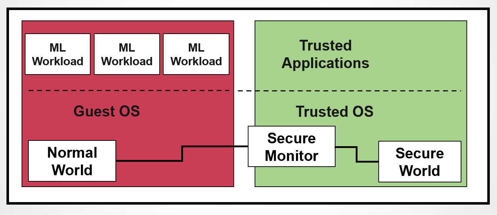
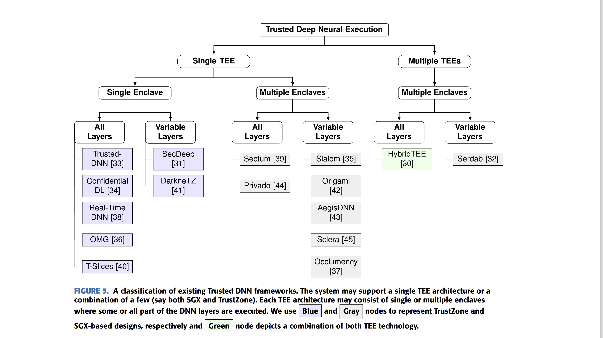
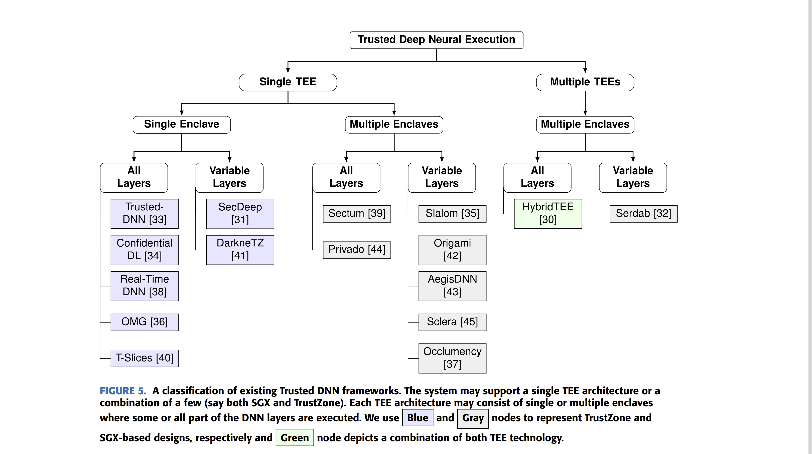
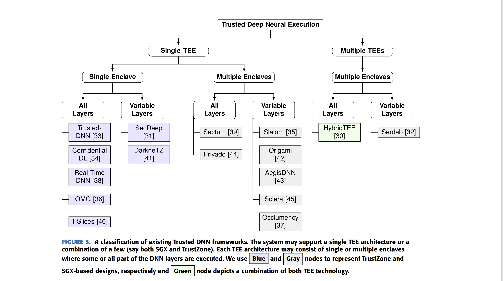

Research Experience


 


Real-time Scheduling of DNN Workloads in Secure Enclaves
- Enabling timing guarantees for performing confidential deep inference in latency-critical learning-enabled systems.
- A new scheduling framework and analytical model to determine the feasibility of deploying a given real-time DNN workload on TrustZone enclaves.
- A novel task fusion approach to further reduce TEE context-switch overheads while retaining real-time guarantees.
Exploring Covert Channel/Information Leakage in Real-time Systems
- We propose an analytical model that finds the existence of an algorithmic covert channel for a set of multi-frame tasks.
- We analyze the problem of information leakage in dual-mode fixed-priority real-time systems.
- We propose a statistical analysis that allows low-priority tasks to infer execution patterns of a high-priority task.
Exploring the Feasibility of Deploying LLMs in Embedded Devices and Performance Analysis
- Our study systematically investigates the performance of BERT-based language models on four off-the-shelf embedded platforms (Raspberry Pi, Jetson, UP², and UDOO) with two different memory variants (2 GB and 4 GB RAMs). We analyzed the trade-offs between complexity and accuracy across multiple NLP tasks.
- We explore the feasibility of deploying complex NLP tasks on embedded systems and analyze them under three metrics: (a) inference time, (b) memory usage, and (c) energy consumption. We developed a lookup table through empirical observations that will be useful for system designers to decide suitable model configurations for the target platform.
Common vulnerabilities and exposures (CVE) dataset analysis: A collaboration with Pacific Northwest National Laboratory
- Analyzed CVE datasets to identify patterns in vulnerability exploitability using signal processing techniques (e.g., FFT) and clustering methods (e.g., Mahalanobis and Euclidean distances).
- Investigate co-exploitation behaviors, fragmentation patterns, and exploit density to understand coordinated vulnerability exploitation.